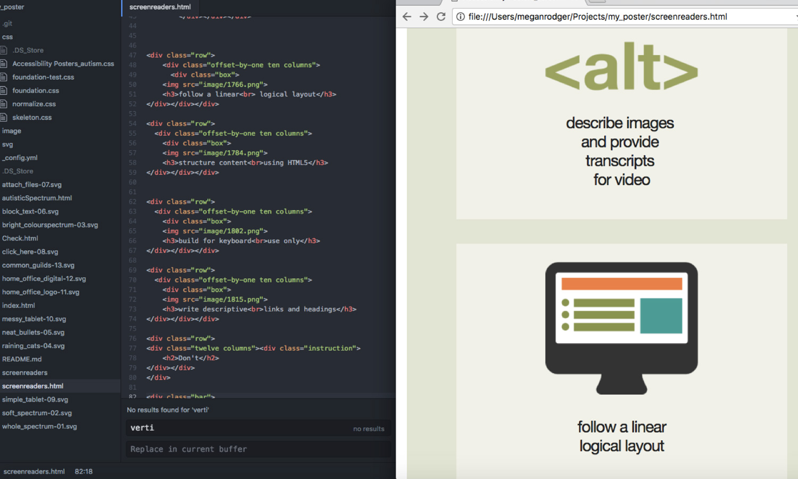
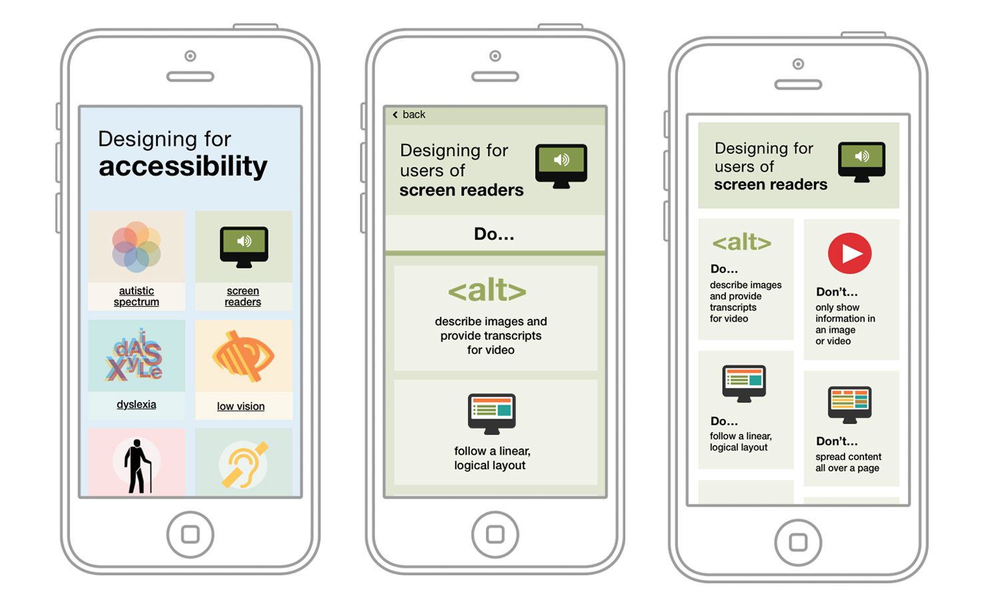
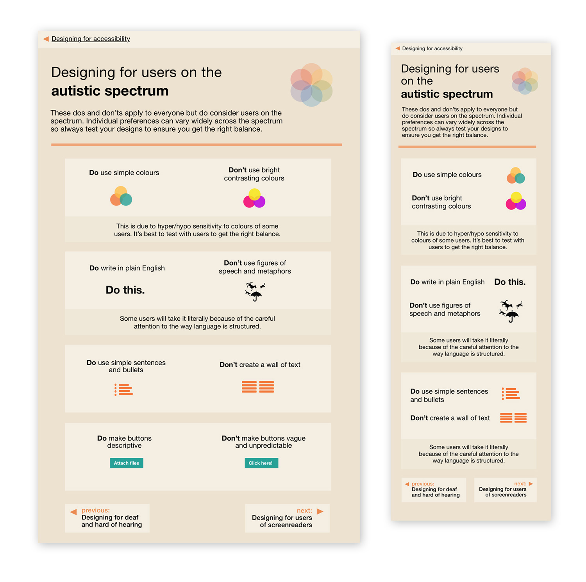

Accessibility is vital to all services that the Home Office Digital create. There is a community of designers and researchers who have been working on collecting together knowledge about specific access needs and how to design for them. In order to make this knowledge shareable one of the designers, Karwai Pun, created a set of posters that gathered the do’s and don’ts of designing for specific access needs, and as these posters quickly became widely shared it became apparent that there was a need for accessible versions of the posters.
I created accessible pdfs, using a combination of InDesign and Acrobat Pro, which now sit on the Home Office Digital github site. Though pdfs still have their limitations; they are not fully accessible, they don't allow their users to customise contrast and colour, and they have to be downloaded. It was important to continue to develop an html version that could be truly accessible to all users.
I began prototyping an html version of the posters, using a responsive framework 'Skeleton' and a mobile first approach. Iterating from feedback from the accessibility design community and working with another designer, we got to a version with easy navigation, tabbed reading order, and fully descriptive alt text in simple html/css. This sits now as an open-source responsive version of the posters that are moving towards being fully accessible.
Wanting to further utilise the affordances that a website provides, I considered the options of functionality of the posters in their web form; should all the 'do's and don'ts' exist in one place and be filtered for which needs the user of the website is looking for, or how should the site be navigated for best ease of reference. After feedback from peers and thinking about how the posters will accommodate future research and additional information, I settled on one of the simpler forms that’s more true to the original posters. The next steps to allow more access needs, and contextual knowledge is being developed now in a way that will be easy to maintain for future contributors.

tagging and structuring poster in acrobat
  final iteration of poster design, for web and mobile